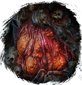
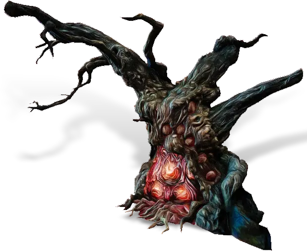

Открыть в интерактивной вики →

| Уровень | лёгк. 40 / норм. 50 / тяжел. 60 |
|---|---|
| Зоны атаки | , , ментальная |
| Шанс дропа 100% — уровни | лёгк. 1-40 / норм. 1-40 / тяжел. 1-50 |
| Шанс дропа 90% — уровни | лёгк. 41-50 / норм. 41-50 / тяжел. 51-60 |
| Шанс дропа 70% — уровни | лёгк. 51+ / норм. 51+ / тяжел. 61+ |
| Группа боссов | Непокой |
| Сила (PvE) | лёгк. 4422 / норм. 5502 / тяжел. 5918 |
| Аспект арены | Yantrei |
| Здоровье | лёгк. 200 / норм. 350 / тяжел. 600 |
| Мана | 1000 |
| Выносливость | 1000 |
Локация
- Лес Марионеток
- Проклятый Лес
- Тропинка в лесу
Команда


Навыки


Дроп
 Элементарный глиф
Элементарный глиф  Ученический глиф
Ученический глиф 
 Путь непокоя
Путь непокоя 
 II-IV
II-IV 
 Даймонит 3
Даймонит 3 | Рары | Синергетики | Эпики | |||
 Рары Рары  Рары Рары  Рары Рары  Рары Рары | 20-40 ур. |  Эпики Эпики | |||
Прочее:  Элементарный глиф Элементарный глиф  Ученический глиф Ученический глиф  Путь непокоя Путь непокоя | |||||
Требования для входа
тяжел.: Путь непокоя
Путь непокояПуть по картам
Умения
- Очищение — групповое лечение усиление характеристик
Иммунитеты / особые умения
Устойчивость к ближним атакам
Иммунитет к дальним атакам
Иммунитет к ментальным атакам